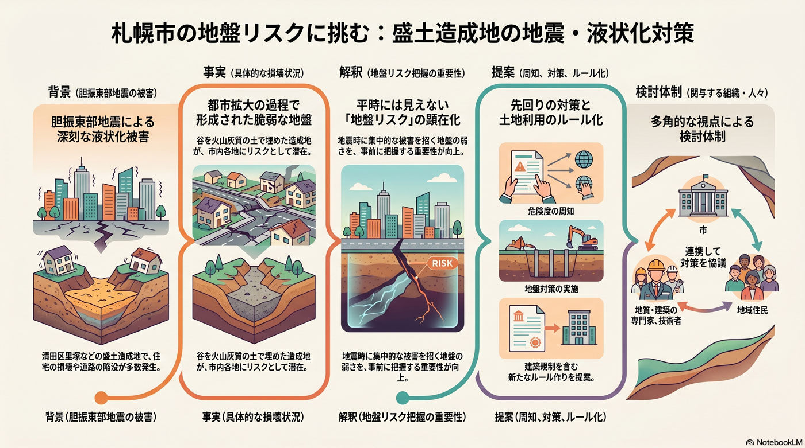

地盤災害への備え（液状化・地すべり）
盛土造成地の液状化に加え、手稲山地区の地すべりなど、地盤災害への備えが問われる。

背景
胆振東部地震では、谷を火山灰質の土で埋めた盛土造成地である清田区里塚などで液状化が起き、住宅が大きく損壊した。市街地拡大の過程で造成された地盤の弱い区域が市内各地にあり、地盤リスクの把握と対策が課題となる。さらに、手稲山の一部では大規模な地すべり地形が確認され、地すべり防止区域・土砂災害警戒区域に指定されている。住宅や公共施設に加え、札樽自動車道・国道5号・JR函館本線といった重要交通網への影響が懸念され、国・北海道・市が連携して未然防止の対策を進めている。
主要データ
| 手稲山地区の地すべり | 大規模な地すべり地形を確認。地すべり防止区域・土砂災害警戒区域に指定（現時点で大きな被害は未発生） |
|---|---|
| 国の直轄事業化 | 2026年（令和8）4月から国（北海道開発局）が実施する地すべり対策事業に |
| 影響しうる重要インフラ | 札樽自動車道・国道5号・JR函館本線、周辺の住宅・公共施設 |
事実
- 胆振東部地震では、清田区里塚など盛土造成地で液状化が発生し、多数の住宅が損壊した。
- 東区などでも道路の陥没が生じ、液状化したとみられている。
- 手稲山の一部地域で大規模な地すべり地形が確認され、地すべり防止区域・土砂災害警戒区域に指定されている（現時点で大きな被害は発生していない）。
- 手稲山地区の地すべり対策は2026年（令和8）4月から国（北海道開発局）の直轄事業となり、抑制工（集水井・横ボーリング・集水トンネル）・抑止工（深礎杭）・危険箇所の集団移転などの案が比較・評価されている（札樽自動車道の移転は困難とされる）。
- 国・北海道・札幌市は2025年7月・2026年2月に住民説明会を開催し、市道の亀裂箇所はライブカメラで監視・配信されている。
解釈
都市の拡大期に造成された地盤の弱い区域は、平時は見えにくいが地震時に集中的な被害となって現れる。手稲山の地すべりのように、住宅と高速道路・鉄道など広域の重要インフラを同時に脅かす地盤災害もあり、リスクの把握と先回りの対策（場合によっては移転を含む）が要る。
提案
- 液状化危険度の周知と、盛土造成地の地盤対策。
- 手稲山地区の地すべりへの抑制工・抑止工と、危険箇所の移転を含む選択肢の比較・合意形成。
- ハザード情報を踏まえた土地利用・建築のルール化。
深掘り — 市民の声と答え
手稲山の地すべりって、どれくらい危ないの？
手稲山の一部で大規模な地すべり地形が確認され、地すべり防止区域・土砂災害警戒区域に指定されている。今のところ大きな被害は出ていないが、動き出せば周辺の住宅や公共施設、札樽自動車道・国道5号・JR函館本線といった重要交通網に影響しうるため、未然防止の対策が進められている。市道の亀裂箇所はライブカメラで常時監視・配信されている。
対策は誰が、どうやって進めるの？ 費用は？
規模が大きく広域に影響しうるため、2026年（令和8）4月から国（北海道開発局）の直轄地すべり対策事業として実施される。工法は、地下水を抜く抑制工（集水井・横ボーリング・集水トンネル）や、杭で支える抑止工（深礎杭）に加え、危険な場所の住宅の集団移転も選択肢で、複数案を比較中（札樽自動車道の移転は困難とされる）。総事業費は計画段階評価の途中で、現時点で確定額は公表されていない。
検討体制・メンバー
札幌市危機管理局・都市局が地盤・防災を所管する。検討会には地盤工学・地質の専門家、建築・宅地の技術者、被災地域の住民、土地利用を扱う部局を入れ、危険度の周知と造成地の対策、土地利用ルールを検討する。
AIノート
AIの貢献度は中。地質・地形・地下水のデータを統合した液状化危険度の高精度マップ作成や、被害シミュレーションに役立つ。地すべりでも、変位センサーや観測データの解析で動きの兆候を早期に捉える監視に有効。リスクの可視化で対策の優先順位を示せるが、地盤改良・移転などの対策は工事と費用が前提。